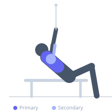
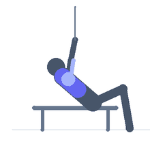

Exercise guide / Standing Cable Incline Press
Standing Cable Incline Press
A standing chest press performed with cables set at a low position, pressing upward and forward at an incline angle. This replicates the vector of an incline bench press in a standing, free-movement context. The standing position adds core anti-extension demand while the cable maintains constant tension through the full pressing range, particularly at the top where free weights become lighter.
Primary muscles
pectoralis major clavicular
Secondary muscles
deltoid anterior
triceps lateral head
Stabilizers
transverse abdominis
erector spinae
Equipment
Cable Machine (Low Pulley)


Starting position
- Face away from a cable machine with low pulleys set near the floor. Hold both handles with arms bent, hands at lower chest/hip level. Stand in a split stance for stability.
Setup
- Set both low pulleys at the lowest position. Attach single D-handles. Stand far enough from the stack to have taut cables at the bottom of the press.
Steps
- Step 1: Face away from the machine, cables running from low behind you. Hands at hip/lower chest level, elbows bent.
- Step 2: Press the handles forward and upward at an incline angle — toward where a high wall meets the ceiling.
- Step 3: Fully extend the arms in the incline press direction.
- Step 4: Return under control, following the same angled path back to the starting position.
Coaching cues
- Press up and out — think incline angle, not flat
- Keep the chest tall and proud — do not let the torso collapse forward
Breathing
- Exhale on the press upward, inhale on the controlled return.
Range of motion
- Full elbow extension at the top. At the bottom, hands are at lower chest level with elbows bent approximately 90 degrees.
Tempo
- 2-0-2-0
Common mistakes
- Pressing straight forward instead of upward at the incline angle
- Leaning excessively forward, reducing core engagement
- Using too much weight, causing the torso to pitch backward
Safety
- Keep the core braced to prevent lower back hyperextension
- Use a split stance with the same side forward as the dominant pressing arm for stability
Training
- hypertrophy: 10–15 reps
- endurance: 15–20 reps
- hypertrophy: 3–4 sets
- Rest: {'hypertrophy': 75}